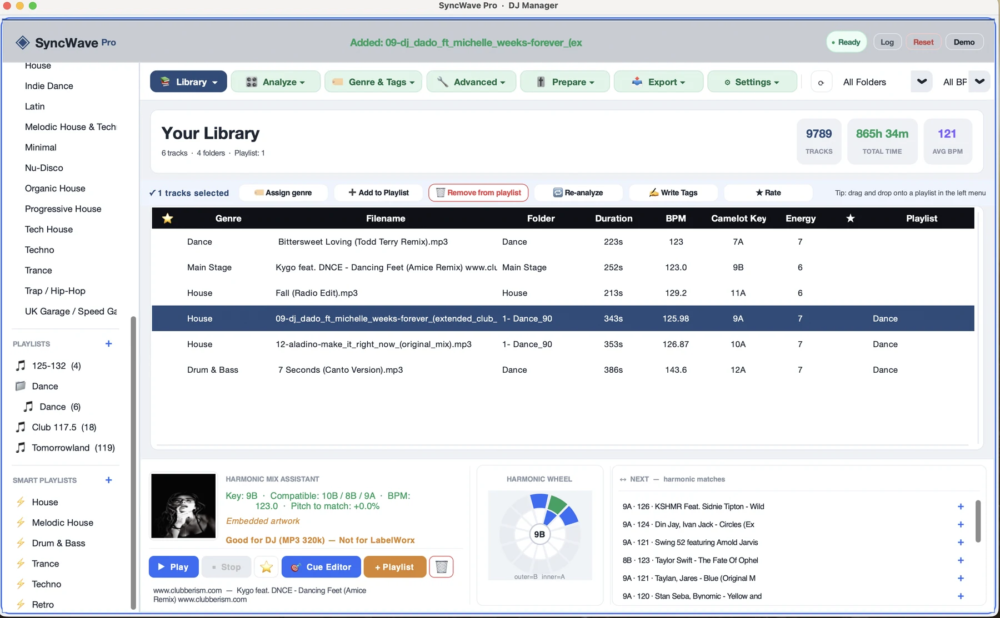
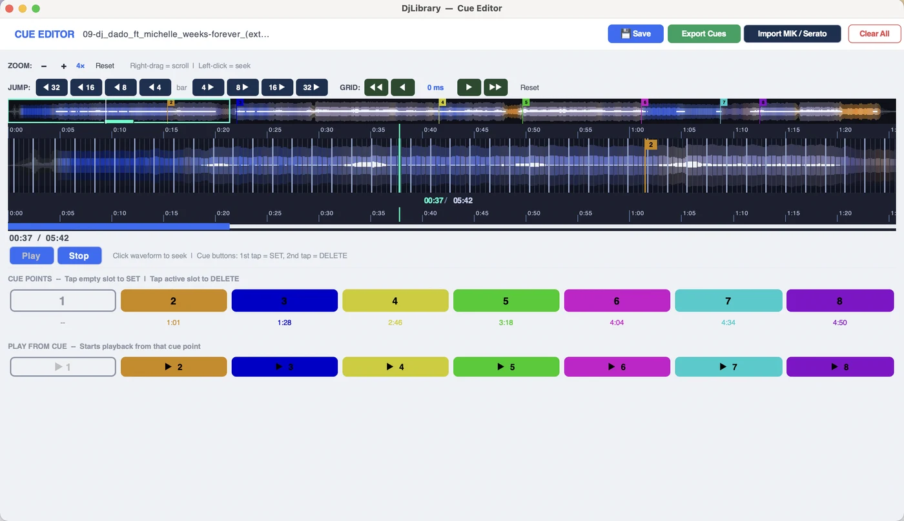
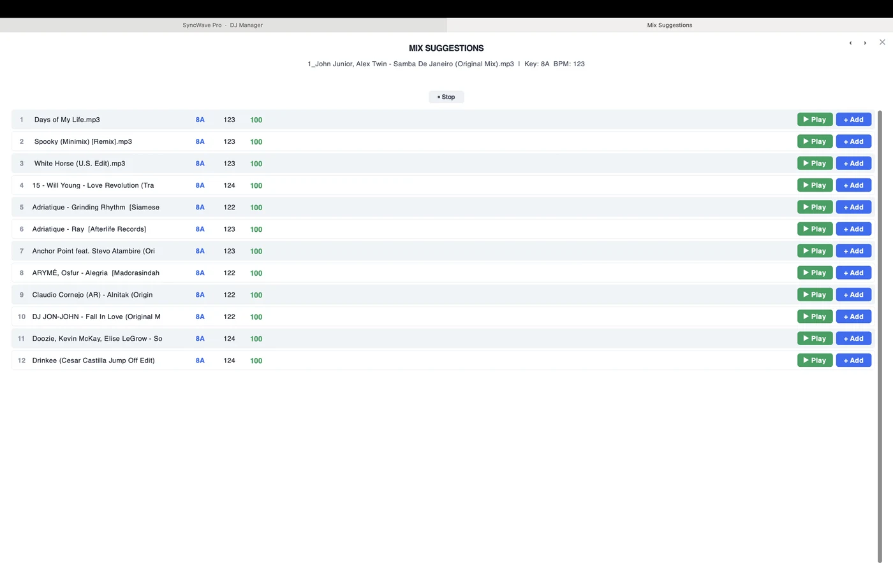
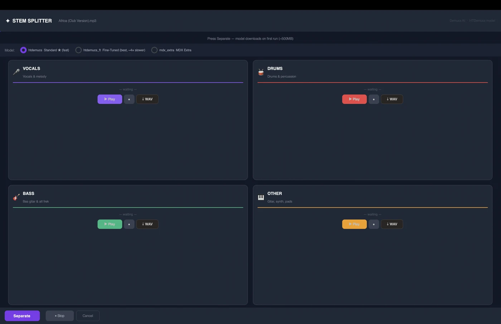

Analyze, organize and export thousands of tracks in one place — harmonic keys, beat-accurate grids, cues, loops, and an Auto DJ that mixes your queue beat-matched. Built for working DJs, not spreadsheets.
One-time purchase · free to try · exports unlock with your license key

Everything in one app
From a messy folder of thousands of files to a tour-ready, harmonically organized library.
Queue your tracks and lean back: the playing track ends naturally while the next one rises in on the beat — BPMs matched automatically, sample-accurate start.
Bass in blue, mids in amber, highs sparkling white — with a beatgrid that sits on the actual hits, downbeats drawn bold. Quiet intros stay visible.
8 colored cues, A-B loops, ±4/8/16/32 bar jumps, millisecond grid nudge and one-tap save.
Automatic Camelot key + BPM + energy. A neural beat engine measures BPM beat-by-beat for grids you can trust.
Draft harmonically-chained sets, check the energy curve, then render the whole playlist as one continuous WAV mix.
A real SQLite-backed library that stays fast where folders and spreadsheets crawl.
Query like a pro: key:8a+, bpm:124-128 — plus smart duplicate, dead-link and genre cleanup tools.
Separate vocals, drums, bass and melody on demand for edits and acapella mixing.
Chord detect, tempo map, LUFS loudness meter, BPM verify, mix suggestions and a transition advisor — built in, not add-ons.



Plays nice with your gear
Keep your cues and loops when you move between platforms.
Pricing
No subscription, no catch. Download free — tip what you think it's worth if it helps your sets.
Via Gumroad · instant license key · set your own price ($0 ok)
Good to know
macOS 12 (Monterey) and later, Apple Silicon and Intel. The app is code-signed and notarized by Apple, so it opens without scary warnings.
Yes. Use the full app for free — analysis, organizing, cues and loops all work. A license key unlocks the export features (Rekordbox, Serato, MIK, USB).
It uses an AI separation engine that downloads automatically the first time you use it (one-time, a few minutes). After that, splitting runs locally on your Mac.
Yes — exports include cue points and loops so you keep your prep when switching platforms.
Because it ships with a free trial, try before you buy. If something genuinely doesn't work, reach out and we'll make it right.